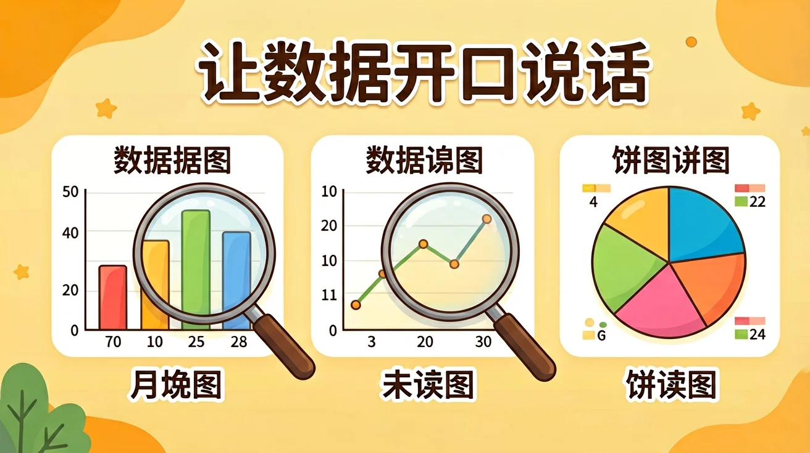

为什么学 · ABT
让数据开口说话
一张密密麻麻的成绩表，和一张彩色的条形图，
哪个能让你一眼看出谁进步最大？
这节课，我们学习把数据画成图，让数据自己"开口说话"！
小学信息科技 · 三年级 · 第 7 单元
📊 学校运动会要决定下届新增哪个项目。
体育老师收到一张 500 人的投票表，全是数字。
怎样让他 10 秒钟就看出结果？
数字本身不会说话，
但把数字画成图，答案就会自己跳出来！
带着这个问题，开始今天的数据魔法课。
👀 什么是数据可视化？
数据可视化 = 把枯燥的数字，变成直观的图形。
人眼对"高矮、长短、大小"的比较，远快于对数字的比较——
所以图表能让我们一眼看出数据里的秘密。
🔍 深层理解 · 比较它：读数字"9、15、6、12"，你要逐个比较才知道谁最大；看四根高低不同的柱子，最高的一根 0.1 秒就能锁定。可视化不是美化，而是把大脑的"计算"变成眼睛的"扫描"。
📈 图表三兄弟
三兄弟各有所长：条形比多少，折线看变化，饼图看占比。
🎮 互动：给数据找个家
先点左边的"数据任务"，再点右边合适的图表。三对全部配对成功就赢了！
📋 数据任务
📊 图表三兄弟
🎮 互动：我来画条形图
小组调查了"最喜欢的运动"：足球 9 人、跳绳 6 人、游泳 4 人。输入数字，点击"画一画"，检查图表对不对！
🌡️ 折线图：一眼看穿变化
🔍 深层理解 · 看见它：折线图的坡度就是变化的速度——线越陡，变化越猛。医院里的体温单、股票大屏上的曲线，都是折线图。医生看一眼坡度，就知道烧退得快不快。
看图回答：这一周气温上升最快的是哪两天之间？
🕳️ 小心！图表也会"撒谎"
左图纵轴从 0 开始，右图纵轴从 50 开始。
同样的数据，右图的差距被"拉长"了，看起来差了 3 倍，其实只差 6 票！
读图先看纵轴从几开始，才不会被骗。
🌟 总结与分层作业
今天学会了：数据可视化 = 把数字变成图形；
条形图比多少、折线图看变化、饼图看占比；
读图先看纵轴起点，小心图表"撒谎"。
🌱 基础
把第四单元调查的"家庭用水"数据画成条形图。
🌿 提高
记录一周气温并画折线图，说说哪天变化最大。
🌳 拓展
在报纸或网上找一张"会撒谎"的图表，指出它的猫腻。